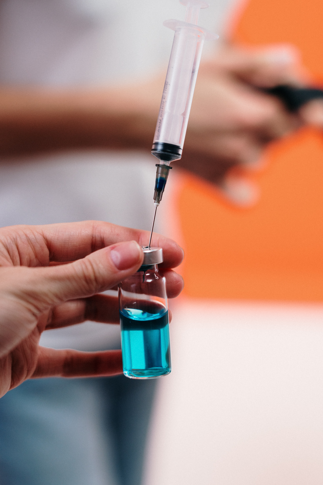
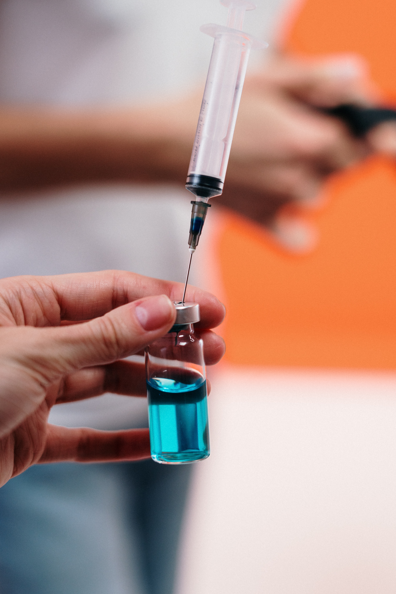

SALUD Y BIENESTAR:
POR QUÉ ES IMPORTANTE
¿Cuál es el objetivo en este caso?
Garantizar una vida sana y promover el bienestar de todos a todas las edades.
¿Por qué?
Garantizar una vida sana y promover el bienestar de todos a todas las edades es importante para la construcción de sociedades prósperas
Sin embargo, a pesar de los importantes avances que se han hecho en los últimos años en la mejora de la salud y el bienestar de las personas, todavía persisten desigualdades en el acceso a la asistencia sanitaria.
Cada año siguen muriendo más de 6 millones de niños menores de 5 años, y solo la mitad de todas las mujeres de las regiones en desarrollo tienen acceso a la asistencia sanitaria que necesitan.
Epidemias como el VIH/SIDA medran donde el miedo y la discriminación limitan la capacidad de las personas para recibir los servicios que necesitan a fin de llevar una vida sana y productiva.
El acceso a la salud y el bienestar es un derecho humano, y esta es la razón por la que la Agenda para el Desarrollo Sostenible ofrece una nueva oportunidad de garantizar que todas las personas, no solo las de mayor poder adquisitivo, puedan acceder a los más altos niveles de salud y asistencia sanitaria.
El gasto de 1.000 millones de dólares en cobertura vacunal puede salvar la vida de 1 millón de niños cada año.
 


¿Qué progresos hemos logrado hasta la fecha?
Se han hecho grandes progresos en ámbitos como el de la salud maternoinfantil, así como en el de la lucha contra el VIH/SIDA, la malaria y otras enfermedades.
Desde 1990, la mortalidad materna ha disminuido casi un 50%; la vacuna contra el sarampión ha evitado unos 15,6 millones de muertes desde 2000; y a finales de 2014, 13,6 millones de personas tenían acceso a terapia antirretroviral.
Podemos haber recorrido un largo camino, pero todavía tenemos un camino más largo por delante. El auténtico progreso es lograr la cobertura sanitaria universal; hacer que los medicamentos y las vacunas esenciales sean asequibles; garantizar que las mujeres tengan pleno acceso a los servicios de salud sexual y reproductiva; y poner fin a la mortalidad prevenible de niños.
¿Cuánto costará lograr estos objetivos?
Garantizar una vida sana para todos exige un compromiso firme, pero los beneficios compensan los costos. Las personas sanas son la base de las economías saludables.
Por ejemplo, si destináramos 1.000 millones de dólares a la ampliación de la cobertura vacunal contra la gripe, la neumonía y otras enfermedades prevenibles, podríamos salvar la vida de 1 millón de niños cada año. En el último decenio, las mejoras en los ámbitos de la salud y la asistencia sanitaria aumentaron un 24% el crecimiento de los ingresos en algunos de los países más pobres.
El precio de la inacción es mucho mayor —millones de niños seguirán muriendo de enfermedades prevenibles, las mujeres seguirán muriendo durante el embarazo y el parto, y los costos de la asistencia sanitaria seguirán sumiendo a millones de personas en la pobreza. Solamente las enfermedades no transmisibles costarán a los países de ingresos medianos y bajos más de 7 billones de dólares en los próximos 15 años